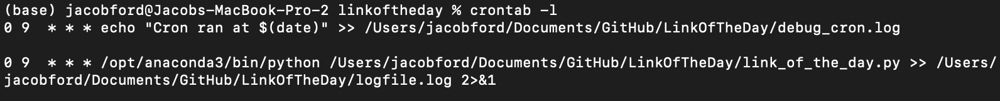
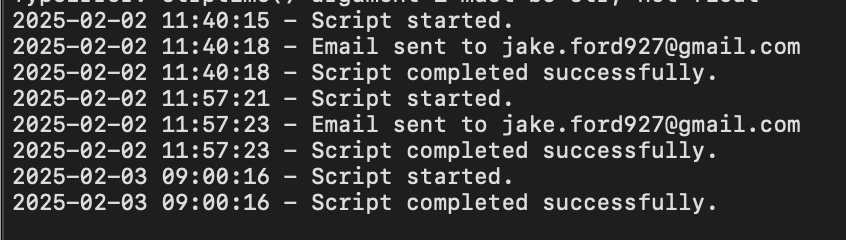

My father, who is 68 and approaching 69, is an incredibly industrious person — someone for whom a retirement without hobbies or activity would be a complete disaster. A friend of mine, in a similar situation with her concerningly available, bordering on bored, father sends dozens of scheduled emails with interesting "Link of the Week" hyperlinks. These are interesting news articles, errata from the deep web, video clips, etc.
I loved this idea, but the thought of manually scheduling a series of emails was a bit tedious. With a simple Python script and a cron job, I can just keep a CSV updated with send_date, the link, and a short description, and concatenate these into an email to send off to a parent!
Technical Requirements
- Google Gmail account with Two-Factor Authentication (2FA) enabled
- Generate an App Password (16 character password for your app)
- Save the password and your email address in a
.envfile — and don't commit your.envto GitHub!
Python Script
The main function is send_email; it uses MIME to format the email (constructing the to, from, subject, etc.) and smtplib to send via SMTP using your credentials from .env.
def send_email(receiver_email, subject, body, sender_email, sender_password):
"""Sends an email with the given subject and body."""
try:
msg = MIMEMultipart()
msg['From'] = sender_email
msg['To'] = receiver_email
msg['Subject'] = subject
msg.attach(MIMEText(body, 'plain'))
with smtplib.SMTP('smtp.gmail.com', 587) as server:
server.starttls()
server.login(sender_email, sender_password)
server.send_message(msg)
log_message(f"Email sent to {receiver_email}")
except Exception as e:
log_message(f"Error sending email to {receiver_email}: {e}")
Cron Job

This cron job setup includes two scheduled tasks that run daily at 9 AM (see the 0 9 * * * line). The first job is a simple test, logging the time it runs into a debug file to confirm that the cron scheduler is working properly. The second job is the actual script execution, running the script daily and saving the output to a log file.

Check out the full GitHub repo here, fork it, update with your own links, and send away!